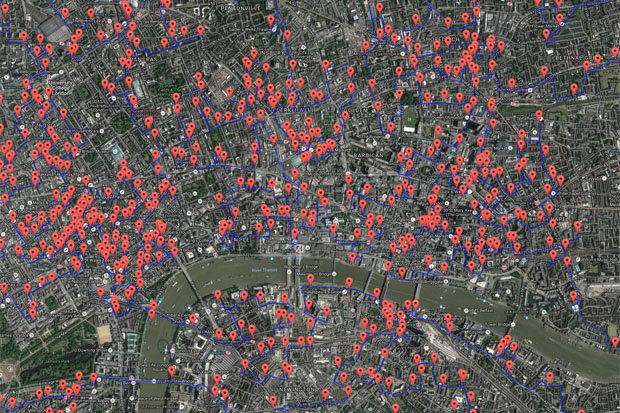

Exploring London's Pubs & Bars with geofacet
Blog Post
A look at London's pubs and bars with the geofacet package.
The Representativeness of UK Parliament
Blog Post
Leveraging everypolitician.org to learn more about the composition of UK Parliament, in the pursuit of transparency and voter empowerment ahead of an upcoming general election.